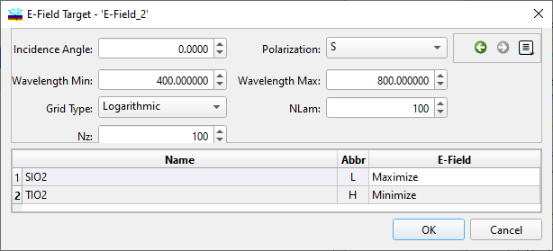

Electric Field Target
Electric Field Target
Navigation: OptiLayer Menu Commands > Data Menu >
Electric Field Target
` <anchor_parameters.html>`__ ` <idh_menu_data.html>`__ ` <layer_absorptance_target.html>`__
The Electric Field Target feature enables the user to minimize or maximize the squared modulus of the electric field amplitude.

The Electric Field editor allows you to specify the following parameters:
Incident Angle
Polarization
Wavelength range
Grid type (Even, Logarithmic, Inversely Proportional)
Number of wavelength points (NLam)
Number of discretization points (Nz) for each layer considered
Target (Maximize or Minimize) for each material layer included in the coating that is currently loaded into memory.
In the example provided, the target is to minimize the squared modulus of the amplitude in all high-index layers. This type of target is commonly used for applications involving high-intensity fields.

If there is a need to specify Electric Field intensity requirements for individual layers rather than materials, here is a useful trick: create a duplicate copy of a material and load it into memory. Then, assign the desired design layers to this duplicate material and set the Electric Field intensity target according to your requirements for those specific layers.